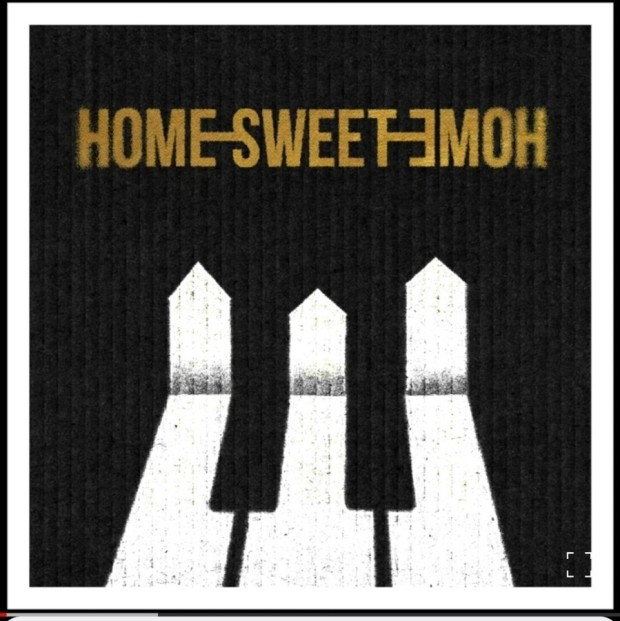

 제가 좋아한 가수가 최근에 컴백하게 되어서 추천합니다. 노래방에 가면 지드래곤 노래를 많이 부르는데, 신나게 불러서 그런지 백점이 많이 나오더라고요. 점수도 잘 나오고 노래 멜로디가 전반적으로 신나다보니 저는 케이팝을 별로 안 듣는데도 지드래곤 컴백 소식을 듣고 요새는 이것만 듣고 있어요. 가사가 특이한 것도 이 노래의 포인트 중 하나인 것 같아요.'혼비백산-해진-미-장센' 부분은 끝말잇기처럼 이어지는 게 재밌어요. 기분이 안 좋을 때, 엄청나게 밝은 분위기의 노래를 들으면 나아져요.